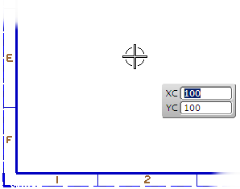
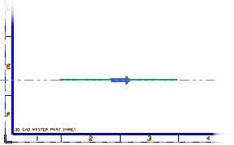
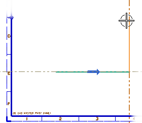

开始第一个轮廓
-
在草图工具工具条上，点击轮廓
 。
。 -
在草图工具工具条上的约束下拉菜单 中，选择显示所有约束。
-
将光标放在图纸页的左下部，大约如下图所示，然后右击并选择添加无限长直线。

-
点击选择直线起点。
-
将光标向右移动，使无限长直线捕捉到水平位置，并且长度大约为150。

-
选择该点以创建无限长直线。

沿着这条无限长直线，将在您选择的起止点之间创建一条与之共线的有限直线段。
-
将光标移动到第一条直线上方，长度大约为100，角度为90，然后选择该点以创建第二条直线。

提示
您也可以直接在屏显输入框中键入想要的值，然后回车。